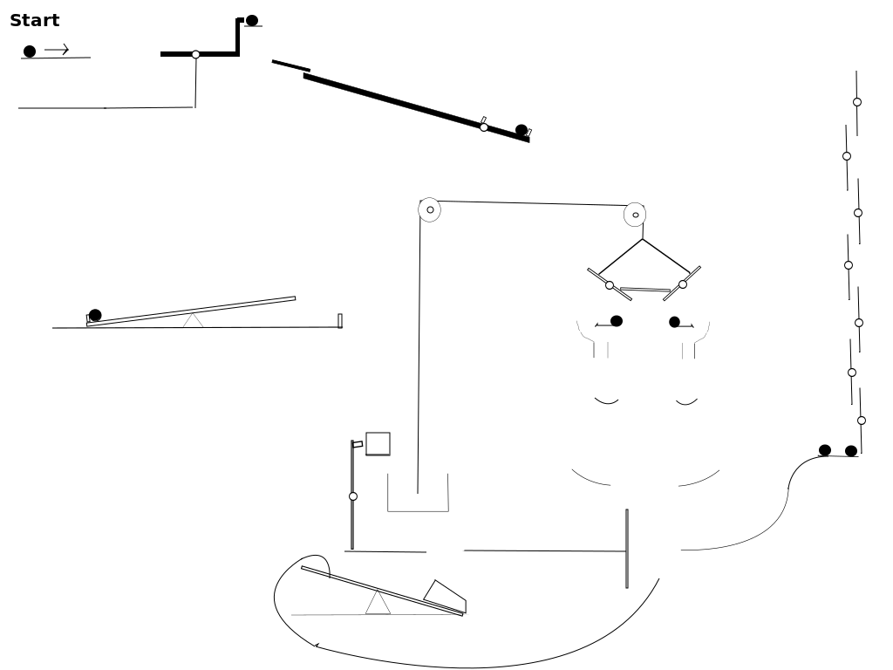

Rube Goldberg Machine Prototype
Back link to
Group Page
References :
We just used the videos to get inspiration about possible designs of Rube GoldBerg Machines. However a major portion of the prototype
below was thought by us
Prototype :
The Rube Goldberg Machine that we plan to implement using
Box2d
